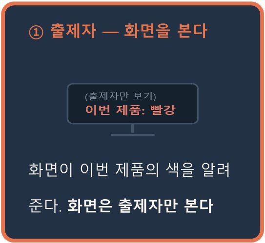
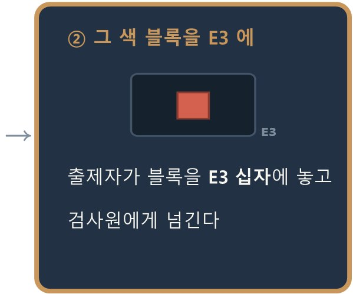
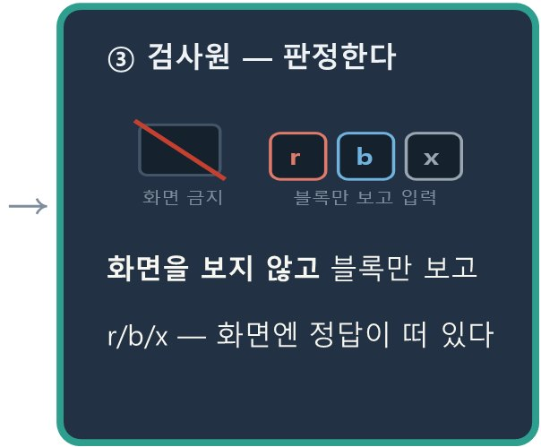
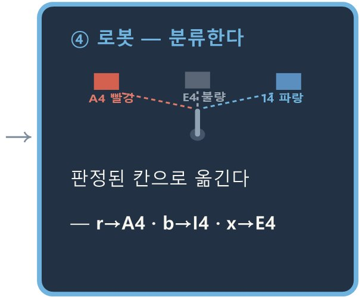
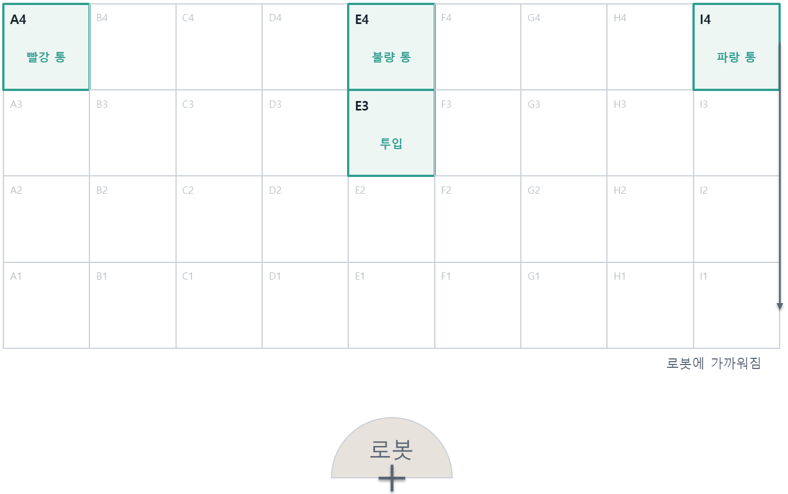
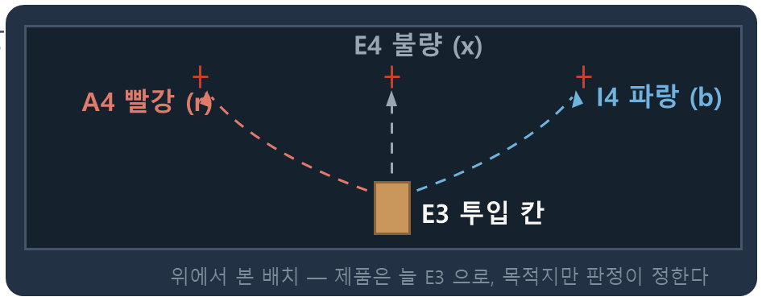
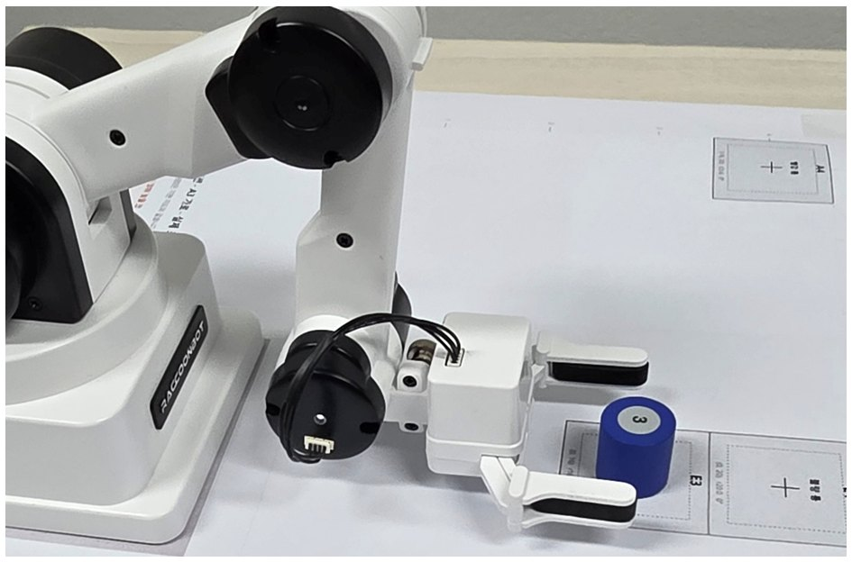

주제 7 · 20차시
공장 시뮬레이션
빨리 하면 틀리고 신중하면 못 따라간다
실제 구분 차시보다 많은 시간이 소요될 수 있음.
분류 공장, 동작 과정 [미션] 분류 공장 운영하기 · 04_공장_시뮬레이션.py
04_공장_시뮬레이션.py — 둘이 한 조. 로봇은 색을 보지 못하므로, 색 판정은 사람(검사원)의 몫이다.




점수 — 맞음 +10 · 틀림 −15
제품 4개 = 한 사이클 · 모든 판정과 시간은 CSV 로 자동 저장 (extras/factory_log.csv)
지금은 색을 사람이 판정한다 — 로봇은 빨강과 파랑을 구분하지 못한다 (자율 탐구의 동기)
공장 시뮬레이션 — 어느 칸에 놓나 04_공장_시뮬레이션.py · A3 작업 지도

· 제품은 투입 칸에 하나씩 도착한다
— 사람이 거기 놓아 준다.
· 로봇이 색을 듣고 통으로 옮긴다.
판정은 사람이 한다.
준비물 — 빨강·파랑 블록 여러 개
(불량 = 뒤집거나 표시한 블록)
역할 2명 — 출제자 / 검사원
투입 칸 하나 · 수거함 세 칸 — 제품은 사람이 투입 칸에 놓아 준다 · 실제 로봇은 _실기기 파일과 같은 폴더에
한 사이클 — 제품 네 개 [미션] 분류 공장 운영하기 · 한 판 · 04_공장_시뮬레이션.py
python extras/04_공장_시뮬레이션.py 를 실행하면 한 사이클이 시작된다.
작업 지도는 오른쪽처럼 — 블록은 늘 E3 으로 들어오고, 목적지는 판정이 정한다.
프로그램이 끝나면 정확도 · 점수 · 소요 시간 · 처리량이 찍힌다.
[해보기]
1. 한 판(4개) 돌리고 점수와 시간을 적는다
2. 수거함을 비우고 틀림점수 −15 를 −50 으로 바꾼다 — 판정 속도는?
3. 우리 조의 전략은? 더 빨리 vs 더 신중히 — 한 줄로 적는다


불량(x) 블록을 어떻게 표시할지(뒤집기? 스티커?)는 조에서 먼저 약속한다 — 검사원이 알아볼 수 있어야 한다